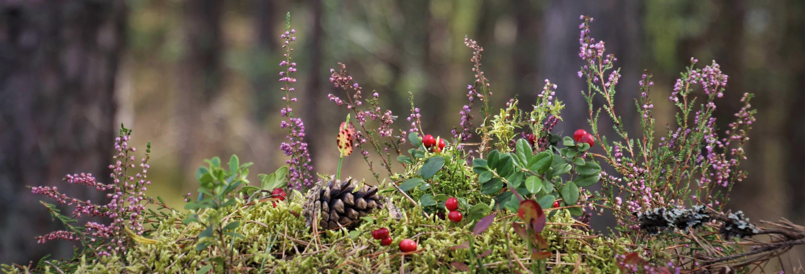
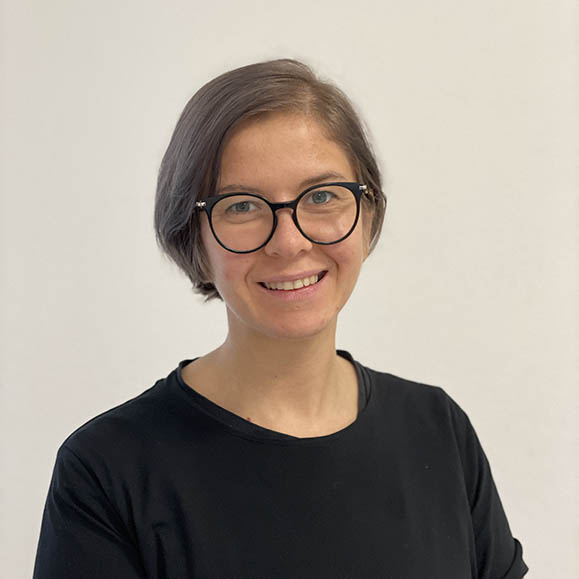

Klīniskais psihologs Madara Nīgale Rīgas centra rajonā. Laipni aicināti griezties pie manis ar jūsu jautājumiem un šaubām. Konsultācijas piejamas klātienā un tiešsaistē
Dažreiz jums var būt nepieciešams ar kādu parunāt par problēmām, konfliktiem vai sarežģijumiem jūsu dzīvē. Kopā mēs varam strādāt jūsu attīstībai lai jūs varētu dzīvot tādu dzīvi, kādu to vēlaties.
Jums tiks mana pilnīga, nenosodoša, beznosacījumu uzmanība. Aicinu veidot patiesas attiecības ar terapijas starpniecību - vietu, kur iespējams jautāt par nesaprotamo, teikt par nepatīkamo un iebilst par nepieņemamo. Ar fokusu uz sarunu un komunikāciju, piedāvāju arī specifisku metožu terapiju, piemēram EMDR traumatisku pieredžu terapiju.
par mani

Madara Nīgale, Mg. Psych.
Klīniskais psihologs
- 2023 - Psihologu specializētās mācības darbam ar bērniem, kas cietuši no seksuālās izmantošnaas, Centrs Dardedze
- 2023 - Profesionālais maģistra grāds psiholoģijā, Latvijas Universitāte
- 2021 - Profesionālais bakalaura grāds psiholoģijā, Rīgas Stradiņa Universitāte
- 2018 - Baklaura grāds filozofijā, Latvijas Universitāte
kontakti
epasts: madara.nigale@gmail.com
adrese: Stabu iela 47, Rīga